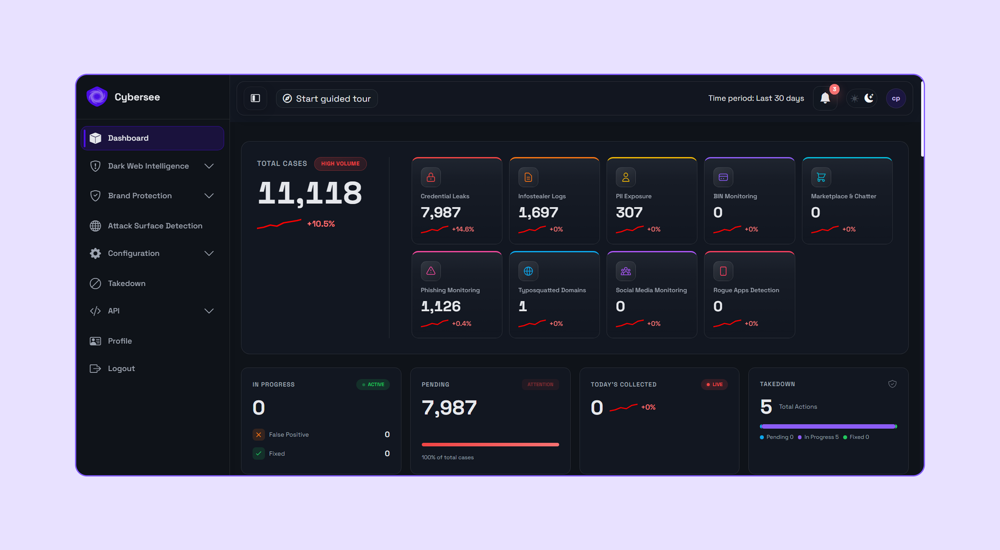
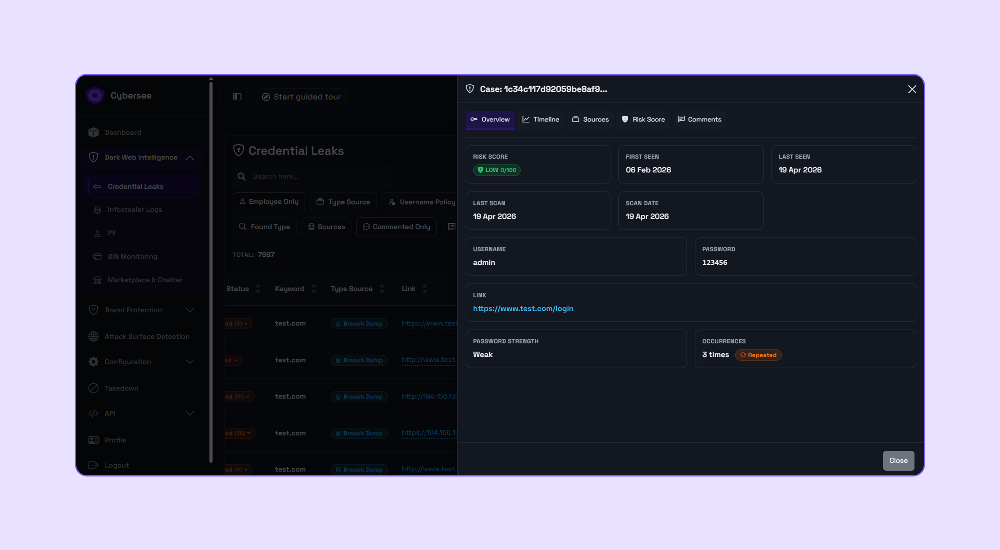
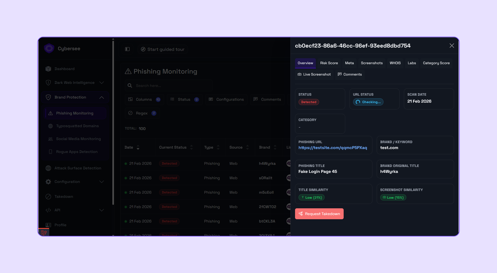
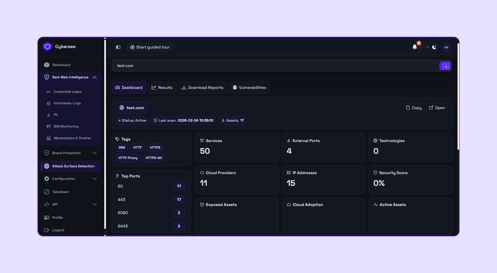
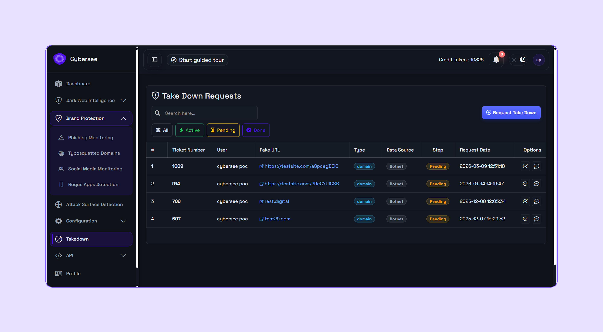
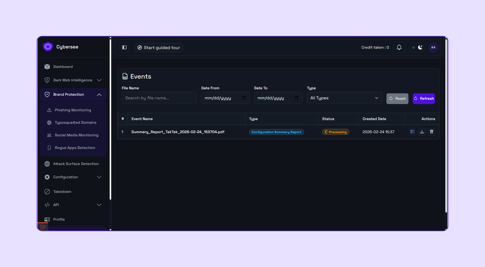

Cybersee gives security teams visibility into dark web leaks, brand impersonation, phishing infrastructure, exposed assets, and external attack signals — with workflows to prioritize risk, accelerate takedowns, and support executive reporting.
Cybersee continuously monitors external sources for threats targeting your organization, including leaked credentials, stealer logs, phishing domains, fake social accounts, rogue apps, exposed assets, and threat actor activity.
Monitor dark web, brand abuse, phishing, rogue apps, and exposed assets.
Remove noise, enrich findings, and confirm relevance to your organization.
Score threats based on severity, source credibility, asset relevance, and business impact.
Notify security teams with evidence, context, and recommended next steps.
Initiate response workflows for phishing, impersonation, and brand abuse.
Generate executive and operational reports for stakeholders.
Monitor dark web forums, marketplaces, and breach databases for threats targeting your organization.
Detect fake domains, impersonation attempts, and brand abuse across social and web channels.
Identify and track your organization's external-facing assets, services, and exposures.
Structured response workflows for phishing, impersonation, and brand abuse takedowns.

All your external threats at a glance — by severity, module, and status.

Track exposed credentials with source, date, and recommended remediation.

Detect fake accounts and impersonation pages before they damage your brand.

Visualize your external attack surface with asset inventory and exposure tracking.

Monitor takedown cases from submission to resolution — full workflow visibility.

Board-ready summaries of exposure, actions, and trends for non-technical stakeholders.